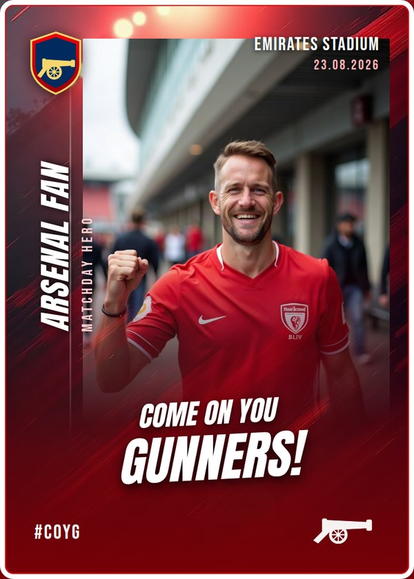
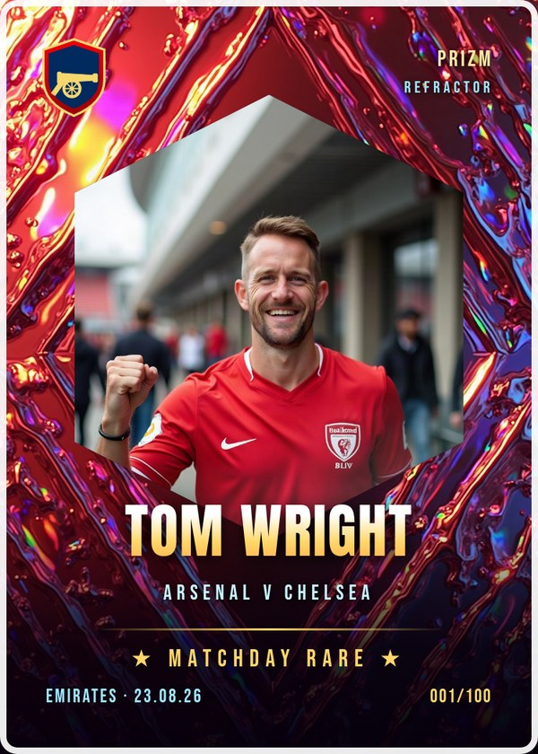
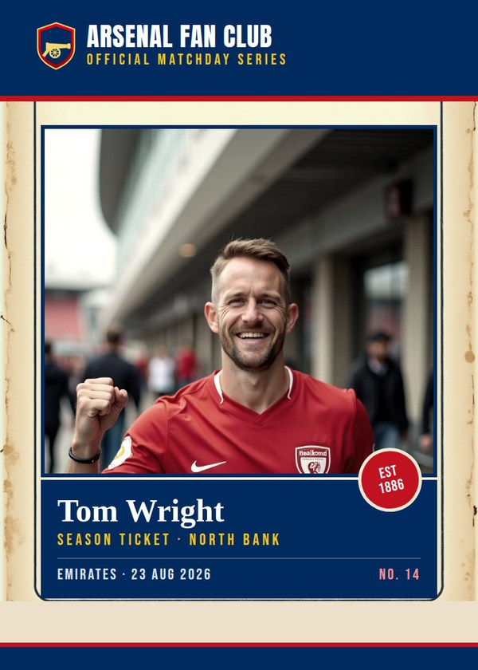
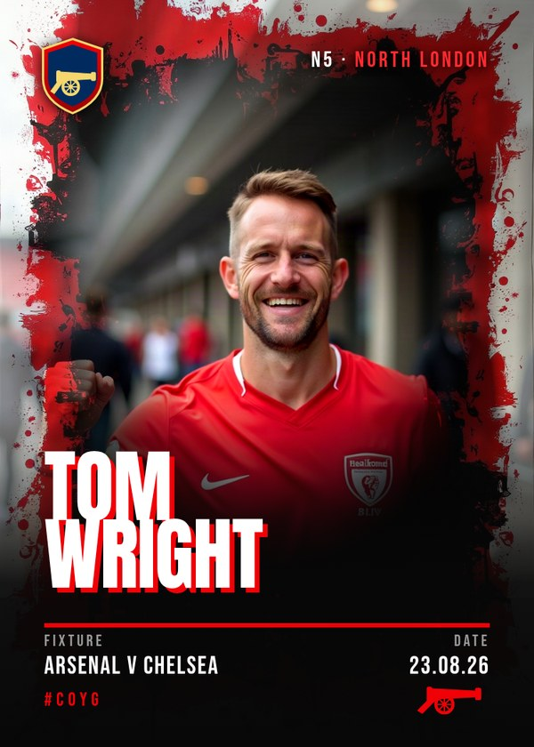
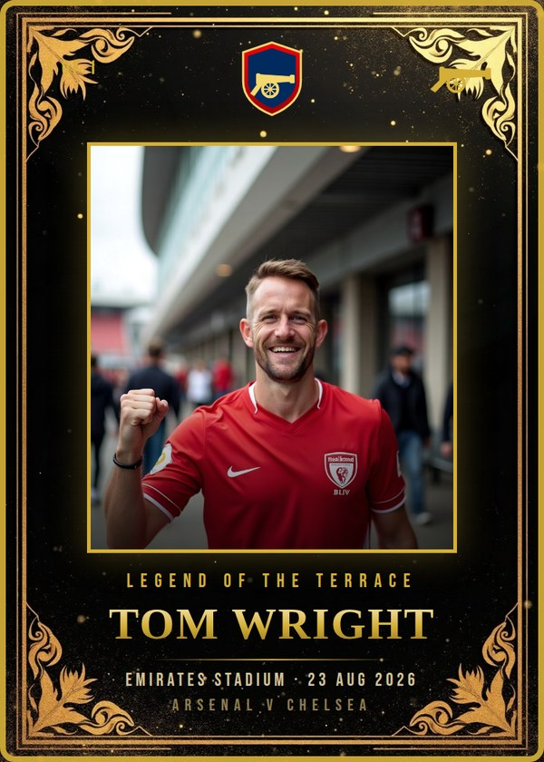
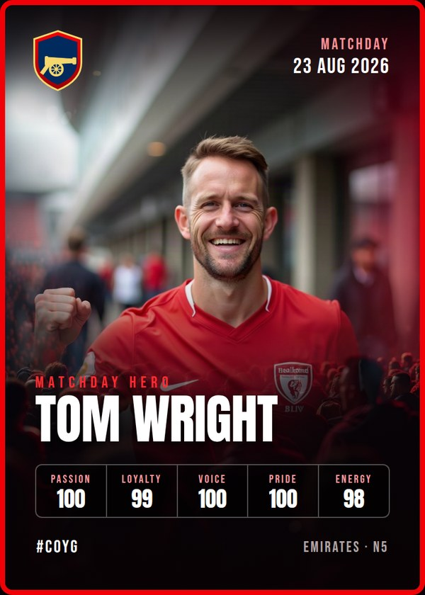
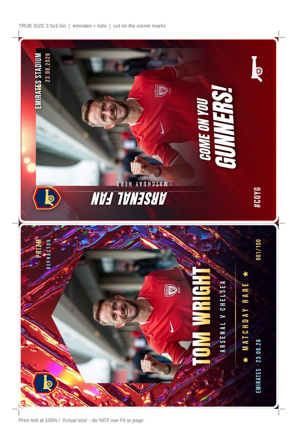
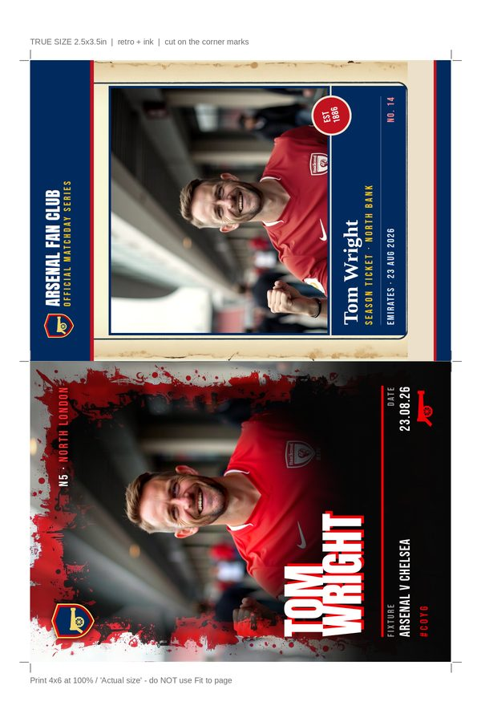
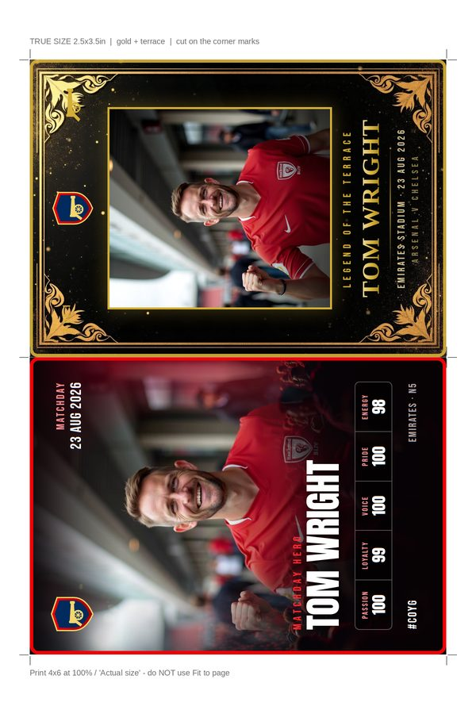
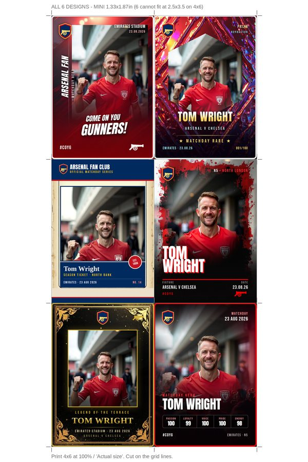

Shoot a supporter outside the ground, drop the photo in, print the card. Every template is built at true trading-card size, 2.5 × 3.5 inches at 300dpi, so it prints sharp rather than screen-sized.

The safe crowd-pleaser. Vertical name rail, red brush sweep, big script chant. Closest to a real club-issue fan card.

Hexagon cut-out, foil shimmer, serial numbered 001/100. Feels collectible, and it is the one people ask for a second copy of.

Aged sticker-album stock, navy plate, serif name. Lands hardest with older supporters.

Torn ink frame, offset red type. The loudest of the six and the most shareable on a phone screen.

Black and gold, "1 of 1". Hold this one back as the rare pull for a standout shot.

Flare-lit crowd backdrop with the stat strip from your reference. Best for groups.
A 4 × 6 sheet is 24 square inches. One card is 8.75. Six is 52.5, which is more than double the paper. The most that fits on a 4 × 6 at true size is two cards, turned sideways. So you get both options below.




Print at 100% / Actual size. If it is set to Fit to page the cards come out undersized and the crop marks stop being accurate. Cut on the corner ticks.
The fan in these previews is a stand-in so you can judge the layouts. The crest and cannon are placeholder marks. Club badges are trademarked, so anything sold or printed at volume needs either your own mark or permission.
{kind=link}
{kind=link}
{kind=link}
{kind=link}